Legal Document
Author: Takin.solutions Ltd.
Version: 1.0
Legal Document
A text based work of legal significance, which can be carried by physical or digital objects.
| Name | URI | |
|---|---|---|
| Root Ontology Node | E33 Linguistic Object | https://cidoc-crm.org/Entity/E33-Linguistic-Object/version-7.1.1 |
| Type Differentiator | N/A | N/A |
| Filed ID | Name | Description | Data Type | CRM Path |
|---|---|---|---|---|
| LAF.6 | Name | This field is used to record the string value of the name attributed to the documented legal document. | String | ->p1->E33_E41[4_1]->p190->rdf:literal |
| LAF.5 | Name Type | This field is used to record the type of the name attributed to the documented legal document. | Concept | ->p1->E33_41[4_1]->p2->E55[5_1] |
| LAF.7 | Name Language | This field is used to record the language of the name attributed to the documented legal document. | Concept | ->p1->E33_E41[4_1]->p72->E56[7_1] |
| LAF.11 | Type | This field is used to record the formal type of the documented legal document. | Concept | ->p2->E55[11_1] |
| LAF.12 | Meta-type | This field is used to record the metatype attributed to a formal classification. The function of a metatype is to enable the programmatic distinction between different kinds of type applied to the same documented entity. | Concept | ->p2->E55[11_1]->p2->E55 [12_1] |
| LAF.15 | Statement | This field is used to record the actual textual content of the statement describing the documented legal document. | String | ->p67i->E33[13_1]->p190->rdf:literal |
| LAF.14 | Statement Type | This field is used to record the formal type of the statement made about the documented legal document. | Concept | ->p67i->E33[13_1]->p2->E55[14_1] |
| LAF.16 | Statement Language | This field is used to record the language of the statement describing the documented legal document. | Concept | ->p67i->E33[13_1]->p72->E56[16_1] |
| LAF.55 | Source Reference Work for Statement | This field is used to link to a source text from which the statement describing the documented legal document is derived. | Reference | Model [DHIM.5_Legal Document] ->p67i->E33[13_1]->p67i->E33[55_1] |
| LAF.10 | Identifier | This field is used to record an identifier attributed to the documented legal document. | String | ->p1->E42[8_1]->p190->rdf:literal |
| LAF.9 | Identifier Type | This field is used to record the type of the identifier attributed to the documented legal document. | Concept | ->p1->E42[8_1]->p2->E55[9_1] |
| LAF.86 | Creator | This field is used to link the documented legal document creation activity to an actor responsible for carrying it out. | Reference Model [DHIM.1_Person; DHIM.2_Group] | ->P94i->E65[71_1]->P14->E39[86_1] |
| LAF.90 | TimeSpan of Curation Event | This field is used to link the documented legal document creation activity to an instance of time-span recording the temporal extent of the activity. | Collection [LAP.6_TimeSpan] | ->P94i->E65[71_1]->P4->E52[90_1] |
| LAF.71 | Creation Event Location | This field is used to link the documented legal document creation activity to a location at which it was carried out. | Reference Model [DHIM.3_Place] | ->P94i->E65[71_1]->P7->E53[71_2] |
| DHIF.79 | Person Referenced | This field is used to link the documented legal document to an actor to whom it refers. | Reference Model [DHIM.1_Person] | ->P67->E39[DHIF.79_1] |
| DHIF.80 | Place Referenced | This field is used to link the documented legal document to a place to which it refers. | Reference Model [DHIM.3_Place] | ->P67->E53[DHIF.80_1] |
| DHIF.81 | Document Referenced | This field is used to link the documented legal document to another textual work to which it refers. | Reference Model [DHIM.5_Legal Document] | ->P67->E33[DHIF.81_1] |
| DHIF.7 | speech act documented | This field is used to link the documented legal document with a speech act to which it attests. | Reference Model [DHIM.6_Legal Act] | ->P70->ZE13[DHIF.7_1] |
| LAF.394 | Part of Text | This field is used to link the documented legal document to another instance of linguistic object of which it is a part. | Reference Model [DHIM.5_Legal Document] | ->P106i->E33[394_1] |
| PIRF.426 | Digital Reference | This field is used to link the documented legal document to a digital object, expressed as a uri, which describes it. | uri | ->P67i->D1[426_1] |
| PIRF.427 | Digital Reference Type | This field is used to indicate the type of a digital object, expressed as a uri, which describes the documented legal document. | Concept | ->P67i->D1[426_1]->P2->E55[427_1] |
- Legal Document Ontology Graph

- Legal Document RDF
@prefix crm: <http://www.cidoc-crm.org/cidoc-crm/> .
@prefix crmaaa: <http://takin.solutions/cidoc_crm/crmaaa/> .
@prefix rdfs: <http://www.w3.org/2000/01/rdf-schema#> .
<https://linked.art/example/models/object> a crm:E33_Linguistic_Object ;
crm:P106i_forms_part_of <https://linked.art/example/conceptual_object/394_1> ;
crm:P1_is_identified_by <https://linked.art/example/conceptual_object/4_1>,
<https://linked.art/example/conceptual_object/8_1> ;
crm:P2_has_type <https://linked.art/example/type/11_1> ;
crm:P67_refers_to <https://linked.art/example/actor/DHIF.79_1>,
<https://linked.art/example/conceptual_object/DHIF.81_1>,
<https://linked.art/example/place/DHIF.80_1> ;
crm:P67i_is_referred_to_by <https://linked.art/example/conceptual_object/13_1>,
<https://linked.art/example/conceptual_object/426_1> ;
crm:P70_documents <http://takin.solutions/cidoc_crm/crmaaa/speech_act/DHIF.7_1> ;
crm:P94i_was_created_by <https://linked.art/example/event/71_1> .
<http://takin.solutions/cidoc_crm/crmaaa/speech_act/DHIF.7_1> a crmaaa:ZE13_Speech_Act .
<http://vocab.getty.edu/aat/300418049> a crm:E55_Type .
<http://vocab.getty.edu/page/aat/300404670> a crm:E55_Type ;
rdfs:label "preferred terms" .
<https://linked.art/example/actor/86_1> a crm:E39_Actor .
<https://linked.art/example/actor/DHIF.79_1> a crm:E39_Actor .
<https://linked.art/example/conceptual_object/13_1> a crm:E33_Linguistic_Object ;
crm:P190_has_symbolic_content "Statement_string_content" ;
crm:P2_has_type <https://linked.art/example/type/14_1> ;
crm:P67i_is_referred_to_by <https://linked.art/example/statement/55_1> ;
crm:P72_has_language <https://linked.art/example/type/16_1> .
<https://linked.art/example/conceptual_object/394_1> a crm:E33_Linguistic_Object .
<https://linked.art/example/conceptual_object/426_1> a crm:D1_Digital_Object ;
crm:P2_has_type <https://linked.art/example/type/427_1> .
<https://linked.art/example/conceptual_object/4_1> a crm:E33_E41_Linguistic_Appellation ;
crm:P190_has_symbolic_content "Name_string_value" ;
crm:P2_has_type <http://vocab.getty.edu/page/aat/300404670> ;
crm:P72_has_language <https://linked.art/example/type/7_1> .
<https://linked.art/example/conceptual_object/8_1> a crm:E42_Identifier ;
crm:P190_has_symbolic_content "Identifier_value_content" ;
crm:P2_has_type <https://linked.art/example/identifier/9_1> .
<https://linked.art/example/conceptual_object/DHIF.81_1> a crm:E33_Linguistic_Object .
<https://linked.art/example/event/71_1> a crm:E65_Creation ;
crm:P14_carried_out_by <https://linked.art/example/actor/86_1> ;
crm:P4_has_time-span <https://linked.art/example/time_span/90_1> ;
crm:P7_took_place_at <https://linked.art/example/place/71_2> .
<https://linked.art/example/identifier/9_1> a crm:E55_Type .
<https://linked.art/example/place/71_2> a crm:E53_Place .
<https://linked.art/example/place/DHIF.80_1> a crm:E53_Place .
<https://linked.art/example/statement/55_1> a crm:E33_Linguistic_Object .
<https://linked.art/example/time_span/90_1> a crm:E52_Time-Span .
<https://linked.art/example/type/11_1> a crm:E55_Type ;
crm:P2_has_type <https://linked.art/example/type/12_1> .
<https://linked.art/example/type/12_1> a crm:E55_Type .
<https://linked.art/example/type/14_1> a crm:E55_Type ;
crm:P2_has_type <http://vocab.getty.edu/aat/300418049> .
<https://linked.art/example/type/16_1> a crm:E56_Language .
<https://linked.art/example/type/427_1> a crm:E55_Type .
<https://linked.art/example/type/7_1> a crm:E56_Language .
- Legal Document JOSN-LD
{
"@context": "https://linked.art/ns/v1/linked-art.json",
"@graph": [
{
"id": "http://vocab.getty.edu/aat/300418049",
"type": "Type"
},
{
"id": "https://linked.art/example/actor/DHIF.79_1",
"type": "Actor"
},
{
"id": "https://linked.art/example/statement/55_1",
"type": "LinguisticObject"
},
{
"id": "https://linked.art/example/type/16_1",
"type": "Language"
},
{
"id": "https://linked.art/example/actor/86_1",
"type": "Actor"
},
{
"classified_as": [
"https://linked.art/example/type/11_1"
],
"created_by": "https://linked.art/example/event/71_1",
"crm:P106i_forms_part_of": {
"id": "https://linked.art/example/conceptual_object/394_1"
},
"documents": [
"http://takin.solutions/cidoc_crm/crmaaa/speech_act/DHIF.7_1"
],
"id": "https://linked.art/example/models/object",
"identified_by": [
"https://linked.art/example/conceptual_object/4_1",
"https://linked.art/example/conceptual_object/8_1"
],
"referred_to_by": [
"https://linked.art/example/conceptual_object/426_1",
"https://linked.art/example/conceptual_object/13_1"
],
"refers_to": [
"https://linked.art/example/place/DHIF.80_1",
"https://linked.art/example/actor/DHIF.79_1",
"https://linked.art/example/conceptual_object/DHIF.81_1"
],
"type": "LinguisticObject"
},
{
"id": "https://linked.art/example/conceptual_object/DHIF.81_1",
"type": "LinguisticObject"
},
{
"id": "https://linked.art/example/identifier/9_1",
"type": "Type"
},
{
"id": "https://linked.art/example/time_span/90_1",
"type": "TimeSpan"
},
{
"classified_as": [
"https://linked.art/example/identifier/9_1"
],
"content": "Identifier_value_content",
"id": "https://linked.art/example/conceptual_object/8_1",
"type": "Identifier"
},
{
"id": "https://linked.art/example/place/71_2",
"type": "Place"
},
{
"classified_as": [
"https://linked.art/example/type/12_1"
],
"id": "https://linked.art/example/type/11_1",
"type": "Type"
},
{
"id": "https://linked.art/example/type/12_1",
"type": "Type"
},
{
"classified_as": [
"https://linked.art/example/type/14_1"
],
"content": "Statement_string_content",
"id": "https://linked.art/example/conceptual_object/13_1",
"language": [
"https://linked.art/example/type/16_1"
],
"referred_to_by": [
"https://linked.art/example/statement/55_1"
],
"type": "LinguisticObject"
},
{
"id": "https://linked.art/example/conceptual_object/394_1",
"type": "LinguisticObject"
},
{
"carried_out_by": [
"https://linked.art/example/actor/86_1"
],
"id": "https://linked.art/example/event/71_1",
"timespan": "https://linked.art/example/time_span/90_1",
"took_place_at": [
"https://linked.art/example/place/71_2"
],
"type": "Creation"
},
{
"id": "https://linked.art/example/type/427_1",
"type": "Type"
},
{
"_label": "preferred terms",
"id": "http://vocab.getty.edu/page/aat/300404670",
"type": "Type"
},
{
"id": "http://takin.solutions/cidoc_crm/crmaaa/speech_act/DHIF.7_1",
"type": "http://takin.solutions/cidoc_crm/crmaaa/ZE13_Speech_Act"
},
{
"classified_as": [
"https://linked.art/example/type/427_1"
],
"id": "https://linked.art/example/conceptual_object/426_1",
"type": "crm:D1_Digital_Object"
},
{
"id": "https://linked.art/example/place/DHIF.80_1",
"type": "Place"
},
{
"classified_as": [
"http://vocab.getty.edu/aat/300418049"
],
"id": "https://linked.art/example/type/14_1",
"type": "Type"
},
{
"classified_as": [
"http://vocab.getty.edu/page/aat/300404670"
],
"content": "Name_string_value",
"id": "https://linked.art/example/conceptual_object/4_1",
"language": [
"https://linked.art/example/type/7_1"
],
"type": "Name"
},
{
"id": "https://linked.art/example/type/7_1",
"type": "Language"
}
]
}